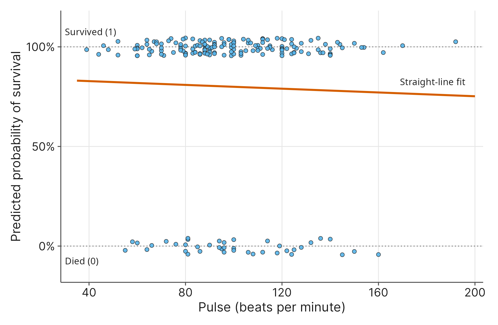
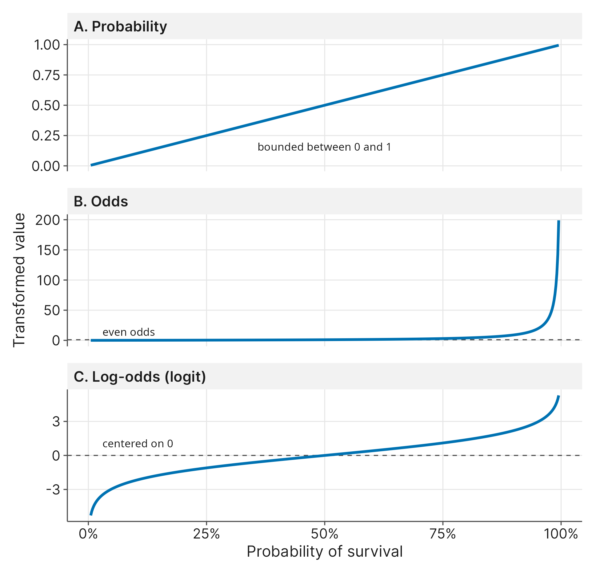
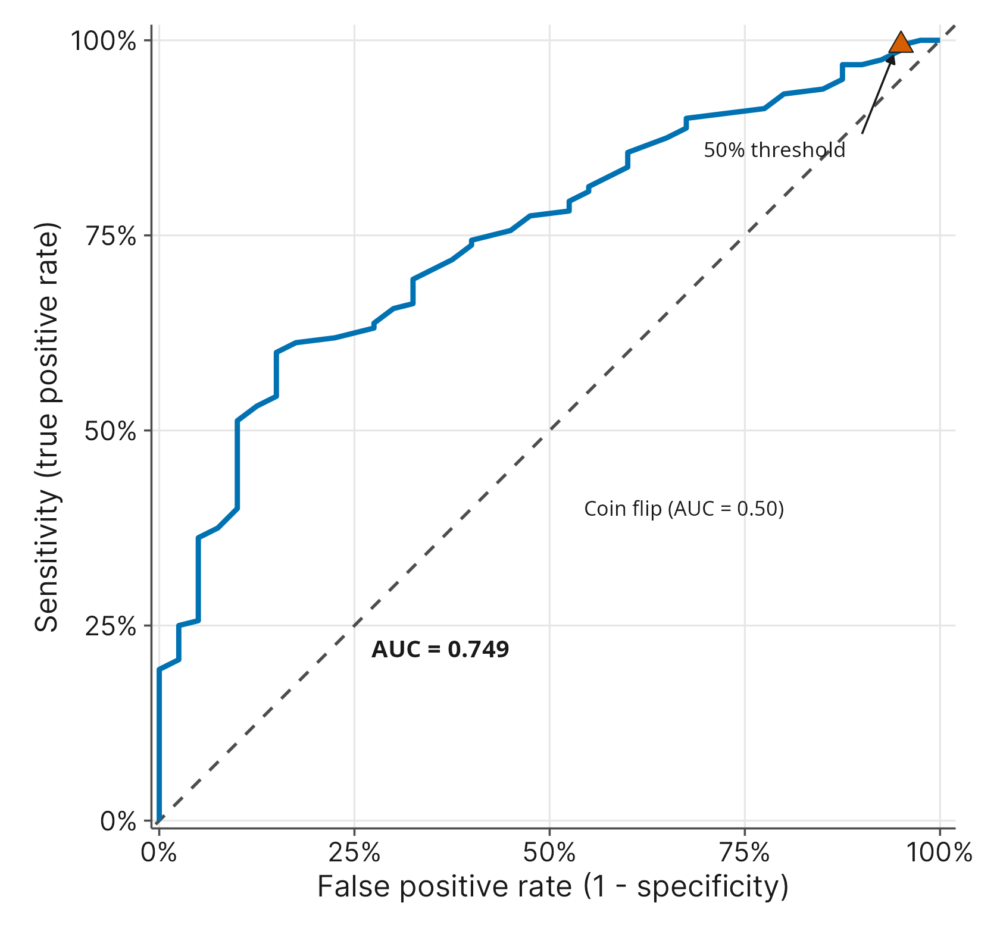

9 Logistic Regression
9.1 Introduction
Up to this point, we have primarily focused on continuous numerical outcomes. We built models to predict things like life expectancy or birth weight, where the response variable can take on a wide, continuous range of values. But what happens when our research question demands a simple binary answer? In many critical social and medical science applications, the response variable is a categorical event. A candidate wins an election, or they lose. A borrower defaults on a loan, or they pay it back. A patient survives a medical emergency, or they pass away.
To evaluate these situations, researchers use logistic regression. Unlike standard linear regression, which tries to fit a straight line to predict a specific numeric value, logistic regression is built to predict the probability that a specific category occurs. It essentially bends our standard straight line into a curve, ensuring that our model’s predictions always make logical sense by staying strictly between 0% and 100%.
We will explore this method by stepping into a high-stakes clinical environment using the icu_data.csv dataset. An Intensive Care Unit handles the most severe, life-threatening cases in a hospital system, demanding continuous monitoring and rapid clinical intervention. Because critical care environments are high-risk, modeling patient survival alongside admission types and physiological baselines is central to improving triage and hospital resource management.
Our motivating research question is straightforward: How do physiological indicators and the nature of a hospital admission influence a patient’s probability of surviving to discharge?
We will rely on a random sample of 200 patients extracted from a larger clinical study to answer this question.
Survive: The patient’s survival status at hospital discharge (\(1 = \text{the patient survived to be discharged}\), \(0 = \text{the patient died in the hospital}\)).Age: The age of the patient in years.Pulse: The patient’s heart rate measured in beats per minute (bpm).Emergency: The type of ICU admission (\(1 = \text{emergency admission}\), \(0 = \text{elective admission}\)).
By the end of this chapter, you will understand how software tools manage the complex math behind logistic regression, allowing us to focus entirely on translating the model’s output into interpretable predicted probabilities. Furthermore, we will revisit the confusion matrix you learned about in the previous chapter. Instead of evaluating a simple, arbitrary rule like patient pulse rates, you will learn how to take the precise probabilities generated by a logistic regression model, set a decision threshold, and build a confusion matrix to accurately evaluate the model’s true sensitivity and specificity.
9.2 The Core Concept: Moving Beyond 2x2 Tables
In the previous chapter, we analyzed relationships between categorical variables using tables. We could easily compare a patient’s infection status (yes or no) against their survival status (yes or no). But what if we want to predict a binary outcome (an event with exactly two possible categorical results) using a continuous numerical variable?
Imagine we want to predict the probability of a patient surviving to discharge (Survive) based on their resting heart rate (Pulse). If we plot this data, the survival outcome on the y-axis can only exist at exactly 0 (died) or exactly 1 (survived).

If we fit a standard linear regression line to this scatterplot, we run into an immediate logical problem. A straight line continues infinitely in both directions. For extremely high or low pulse rates, the straight line will eventually predict survival values greater than 1 or less than 0. Because we want to interpret these predictions as probabilities, a straight line will eventually claim a patient has a -20% or 115% chance of survival. This is mathematically impossible.
Standard linear regression fails when the outcome is a categorical yes or no result because straight lines do not respect the strict boundaries of probability. To solve this, researchers use a mathematical function that bends the straight line into an S-shaped curve. This curve flattens out as it approaches 0 and 1, ensuring that the model’s predicted probabilities always remain valid, no matter how extreme the patient’s pulse rate becomes.
9.3 The Math (Conceptually): The Logit
To mathematically create that S-shaped probability curve, we need a mathematical bridge. We build this bridge in two conceptual steps.
First, we translate probabilities into odds. Humans naturally think in probabilities, but to model our data, we need to compare the chance of an event happening to the chance of it not happening. If we let \(\pi\) represent the true population probability of survival, the formula for odds is:
\[ \displaystyle \text{Odds} = \frac{\pi}{1 - \pi} \]
For example, if a patient has an 80% probability of surviving (\(\pi = 0.80\)), the probability of not surviving is 20% (\(1 - 0.80 = 0.20\)). Dividing 0.80 by 0.20 gives us 4. The odds of survival are 4 to 1, or more directly, 4 patients survive for every 1 death.
While probabilities are neatly bounded between 0 and 1, odds are heavily skewed. Think about the “middle” of a probability scale, which is a 50/50 coin flip. If \(\pi = 0.50\), the odds are exactly 1. This means every event less likely than a coin flip is compressed into the tiny mathematical space between 0 and 1. Meanwhile, every event more likely than a coin flip stretches from 1 all the way out to infinity. We cannot plug something this asymmetrical into a standard straight-line regression model.
To fix this severe skew, we use a mathematical stretching machine: the natural logarithm. In Chapter 4, you saw logarithms visually scale down heavy-sided economic data. Here, the logarithm acts geometrically. It takes that cramped 0-to-1 odds space and pulls it down toward negative infinity. It also takes the infinite stretch above 1 and scales it back down.
This transformation centers our entire system perfectly at 0, creating a new, stretched metric called the log-odds, or the logit.

The logit gives us a canvas suitable for a straight regression line. When you run a logistic regression, the software uses your predictor variables to directly estimate this logit.
However, nobody communicates clinical risk using abstract log-odds. Because our regression estimates the logit directly, we will eventually have to reverse-transform these numbers to make useful predictions like probabilities. We will not worry about the math for that reverse transformation just yet. Our immediate next step is simply learning how to read the initial software output.
9.4 Interpreting the Output: Slopes and Odds Ratios
| Predictor | Coefficient | Standard error | z-value | p-value | Odds ratio |
|---|---|---|---|---|---|
| Constant | 3.0585 | 0.6961 | 4.39 | < 0.001 | 21.2959 |
| Age (years) | -0.0275 | 0.0106 | -2.61 | 0.009 | 0.9728 |
When you run a logistic regression model, your software will output a familiar-looking table of coefficients. Because our model is predicting the logit, the raw slope we get back tells us how the log-odds change for every one-unit increase in our predictor variable.
Because log-odds are abstract, researchers typically treat this raw slope strictly as a directional signal. Let’s apply this to the Age variable in our dataset, which measures the patient’s age in years. In our output table, the raw coefficient for age is -0.0275. The negative sign immediately tells us the direction of the relationship: as age increases, the log-odds of survival decrease. Older age is associated with lower survival rates.
However, telling a doctor that a patient’s log-odds of survival drop by 0.0275 each year is not practically useful. To make these numbers interpretable, statistical software automatically converts these raw slopes into an Odds Ratio.
If we read our software output, it translates that raw slope of -0.0275 into an Odds Ratio of approximately 0.97. This single number is interpretable. It tells us that for every one-year increase in a patient’s age, their baseline odds of surviving are multiplied by a factor of 0.97.
Why does multiplying by 0.97 matter? If you retain 100% of your baseline odds, your multiplier is exactly 1.00. By dropping to 0.97, you are retaining 97% of your baseline odds. Mathematically, this means you have lost 3% (1.00 - 0.97 = 0.03). Therefore, we can interpret this Odds Ratio as a 3% decrease in the odds of survival for every additional year of life.
We must be especially careful here: this is a 3% decrease in the odds of survival, not the probability of survival. Furthermore, because this is a multiplier, the risk compounds like interest on a bank account. A 3% decrease per year does not mean that after 10 years, a patient has lost a flat 30% of their odds. Instead, the odds shrink by 3% of the previous year’s value, curving gently downward rather than dropping in a straight, predictable line. The Odds Ratio allows us to easily understand this compounding, multiplicative risk without ever having to calculate the complex underlying mathematics.
9.5 From Odds to Probabilities
Odds ratios are excellent tools for understanding structural risk factors, like seeing how every additional year of age chips away at survival odds. However, humans fundamentally think in percentages, not odds. If you are a triage nurse evaluating a 65-year-old patient, you do not want to calculate compounding odds; you want to know their actual percentage chance of surviving.
To make our model truly actionable, we must convert our findings back into intuitive predicted probabilities for specific cases. Because our regression line was built using abstract log-odds, calculating the exact probability by hand requires complex mathematics. Instead of wrestling with those complex calculations, we can rely entirely on our statistical software tools to reverse-transform the model’s output into a clean percentage.
To generate a predicted probability, we simply provide the software with a specific patient profile. Let’s ask our software to predict the survival probability for a 65-year-old patient using our simple model.
| Patient profile | Fitted probability | Standard error | 95% confidence interval |
|---|---|---|---|
| 65 years old | 0.7804 | 0.0310 | (0.7138, 0.8351) |
The software takes this specific age, runs it through the log-odds equation, and automatically translates the final result back into a standard probability. Looking at the prediction output, the software gives us a “Fitted Probability” of \(0.780442\). This means our model predicts that a 65-year-old ICU patient has approximately a 78% chance of surviving to discharge.
Furthermore, the software provides a 95% Confidence Interval of \((0.713830, 0.835130)\). Because our model is built on a sample of 200 patients, there is always some uncertainty. This interval tells us we can be 95% confident that the true population probability of survival for 65-year-old ICU patients falls somewhere between 71.4% and 83.5%.
This translation is the ultimate practical goal of logistic regression. We rely on the raw slopes and Odds Ratios to understand how variables influence an outcome, but we use the software’s predicted probabilities to apply the model to decision-making. Once we can generate these specific probabilities, we can evaluate how accurate our model is when forced to make a prediction in practice.
9.6 Multiple Logistic Regression
In Chapter 5, we learned that social and medical outcomes are rarely driven by a single isolated factor. We use multiple variables to account for confounding factors and get a more accurate picture of reality. Logistic regression follows this same logic. We can add multiple predictors to our model to control for overlapping influences and generate specific predictions.
Let’s expand our ICU survival model by including Emergency, a categorical indicator variable where \(1\) represents an emergency admission and \(0\) represents an elective admission.
| Predictor | Coefficient | Standard error | 95% confidence interval | z-value | p-value | VIF |
|---|---|---|---|---|---|---|
| Constant | 5.5088 | 1.0335 | (3.4831, 7.5344) | 5.33 | < 0.001 | n/a |
| Age (years) | -0.0340 | 0.0107 | (-0.0550, -0.0131) | -3.18 | 0.001 | 1.01 |
| Emergency admission | -2.4535 | 0.7526 | (-3.9285, -0.9785) | -3.26 | 0.001 | 1.01 |
9.6.1 Evaluating Predictors: \(p\)-values and VIF
The great news about multiple logistic regression is that the diagnostic tools you learned in Chapter 5 work exactly the same way here.
Looking at our output table, the p-value for both Age and Emergency is \(0.001\). We interpret this just as we did with standard multiple regression: each variable is a statistically significant predictor of survival, even when controlling for the effect of the other.
Furthermore, whenever we add multiple predictors, we must check for multicollinearity to see what happens when predictors overlap. Our output includes the Variance Inflation Factor (VIF). Both variables have a VIF of \(1.01\). Because this is well below standard warning thresholds, we can confidently conclude that a patient’s age and their admission type are providing unique, non-overlapping information to our model.
9.6.2 Interpreting the Odds Ratios
| Predictor | Odds ratio | 95% confidence interval |
|---|---|---|
| Age (years) | 0.9666 | (0.9465, 0.9870) |
| Emergency admission | 0.0860 | (0.0197, 0.3759) |
Now let’s turn to the Odds Ratios to understand the practical effect of these variables.
- Age: The Odds Ratio for
Ageis \(0.9666\). This means for every additional year of life, a patient retains roughly 96.7% of their baseline odds of survival, assuming their admission type stays the same. This translates to a 3.3% decrease in the odds of survival per year (\(1.00 - 0.9666 = 0.0334\)). - Emergency: The Odds Ratio for
Emergencyis \(0.0860\). Because this is an indicator variable, it compares the \(1\) group to the baseline \(0\) group. This means a patient admitted as an emergency retains only 8.6% of the survival odds compared to a patient of the same age admitted for an elective procedure. Mathematically, an emergency admission is associated with a 91.4% drop in the odds of survival (\(1.00 - 0.0860 = 0.914\)).
9.6.3 Predicting Probabilities for Specific Profiles
A 91% drop in odds sounds terrifying, but remember that odds are not percentages. To truly understand the clinical impact of these variables, we must use our software tools to reverse-transform the model’s log-odds output into actionable predicted probabilities.
Let’s generate the predicted probabilities of survival for a 65-year-old patient under both admission scenarios.
| Patient profile | Fitted probability | Standard error | 95% confidence interval |
|---|---|---|---|
| 65 years old, elective admission | 0.9644 | 0.0249 | (0.8674, 0.9911) |
| Patient profile | Fitted probability | Standard error | 95% confidence interval |
|---|---|---|---|
| 65 years old, emergency admission | 0.6993 | 0.0417 | (0.6119, 0.7743) |
Our model predicts that a 65-year-old admitted for an elective procedure has a high \(0.964350\), or 96.4%, probability of surviving to discharge. However, if that same 65-year-old is rushed in for an emergency, their predicted probability of survival drops to \(0.699344\), or roughly 69.9%.
This is the power of multiple logistic regression. By controlling for multiple variables simultaneously, we can move beyond generalized risk factors and provide precise, contextual probabilities that can inform decision-making.
9.7 Model Diagnostics and Accuracy: The Confusion Matrix
Our multiple logistic regression model provides precise predicted probabilities for patient survival. However, to evaluate how practically useful this model is in a high-stakes clinical setting, we need to see how well it classifies patients. To do this, researchers pick a probability threshold (commonly 50%) and instruct the software to make a hard prediction. If a patient’s predicted probability of survival is over 50%, the model predicts they will survive. If it is under 50%, the model predicts they will die.
By cross-tabulating these predictions against what happened to the 200 patients in our sample, we build a confusion matrix.
| Predicted outcome | Actual death (0) | Actual survival (1) |
|---|---|---|
| Predicted death (0) | 2 | 1 |
| Predicted survival (1) | 38 | 159 |
Using our matrix, we can categorize every patient into one of four groups:
- True Positives (159 patients): The model predicted they would survive, and they survived.
- True Negatives (2 patients): The model predicted they would not survive, and they did not survive.
- False Positives (38 patients): The model predicted they would survive, but they unfortunately died.
- False Negatives (1 patient): The model predicted they would not survive, but they lived.
With these counts, we can calculate our model’s accuracy using two metrics introduced in Chapter 8: sensitivity and specificity.
Sensitivity measures the true positive rate: out of all the patients who actually survived, how many did our model successfully identify? In our sample, 160 patients survived in total (159 True Positives + 1 False Negative). Our model correctly predicted 159 of them. This gives our model a sensitivity of 99.4% (159 / 160).
Specificity measures the true negative rate: out of all the patients who actually died, how many did our model correctly identify? In our sample, 40 patients died (2 True Negatives + 38 False Positives). Our model correctly flagged only 2 of them. This gives our model an abysmal specificity of 5.0% (2 / 40).
While our model’s \(p\)-values were statistically significant, this confusion matrix reveals a major practical flaw. Because the baseline survival rate in this ICU dataset is relatively high, setting a 50% threshold causes our model to predict that almost everyone will survive. A model that cannot accurately identify high-risk patients (low specificity) is not particularly useful for hospital triage.
9.7.1 Adjusting the Threshold
Researchers are not permanently locked into a 50% threshold. In a medical setting, the cost of a false positive (predicting a patient will survive when they are actually at high risk of dying) is catastrophic. To fix our model’s poor specificity, we could adjust the probability threshold upward. For instance, we might demand an 85% predicted probability before we classify someone in the “Predicted Survival” category.
By raising the bar for survival, more patients will fall into the “Predicted Death” bucket. This would correctly flag more high-risk patients, significantly improving our specificity. However, this is always a trade-off. By predicting death more often, we will inevitably flag some patients who would have survived just fine, lowering our sensitivity. Researchers must choose a threshold that carefully balances these ethical and practical stakes.
9.7.2 The Illusion of \(p\)-values and Thoughtful Modeling
This large gap between our significant \(p\)-values and our terrible specificity illustrates a core statistical truth: \(p\)-values only measure whether a relationship is better than random chance. A low \(p\)-value is strong evidence that a variable has some effect; it is absolutely not a measure of how useful the model is, how accurately it estimates reality, or whether it belongs in a clinical setting.
That is exactly why we rely on post-hoc diagnostics like the confusion matrix. Our two-variable model failed the practical test because human survival in an ICU is complex. A triage model requires far more than just a patient’s age and emergency status. Researchers must think carefully about the underlying science to select the right variables, perhaps incorporating vital signs like pulse or blood pressure (Pulse, SysBP), or existing infections (Infection), without adding so many variables that the model becomes convoluted overkill. Good modeling is driven by theory and evaluated by practical accuracy, not just by hunting for low \(p\)-values.
9.8 Model Diagnostics and Accuracy: The ROC Curve and the AUC
In the previous section, we saw how manually adjusting our prediction threshold from 50% to 85% changed our model’s sensitivity and specificity. But testing thresholds one by one is tedious. What if we wanted to see the accuracy trade-offs for every possible threshold between 0% and 100% all at once?
To do this, researchers generate a Receiver Operating Characteristic (ROC) curve.

An ROC curve is a visual summary of our model’s performance across all possible decision thresholds. The vertical y-axis plots the Sensitivity (the True Positive Rate). The horizontal x-axis plots the False Positive Rate, which is simply 100% minus the Specificity.
When you look at an ROC curve, you will typically see a diagonal line cutting straight through the middle of the graph. This diagonal line represents a useless model, one that is effectively just flipping a coin. If our model is learning from the data, its curve will bow upward and away from that diagonal line, pushing toward the top-left corner of the graph. That top-left corner represents the holy grail of classification: 100% sensitivity and 0% false positives.
9.8.1 Grading the Model: Area Under the Curve (AUC)
While the ROC curve provides a great visual, researchers usually want a single, standardized number to summarize how well the model distinguishes between categories. We get this by calculating the Area Under the Curve (AUC).
Think of the AUC as a grading scale for your model’s overall accuracy, ranging from 0.5 to 1.0.
- 0.50: The model is guessing blindly (the diagonal line).
- 0.70 to 0.80: The model is acceptable, but leaves significant room for improvement.
- 0.80 to 0.90: The model is excellent.
- 1.00: The model is perfect (which rarely happens practice).
Conceptually, the AUC tells us the probability that our model will correctly rank two random observations. If we randomly pick one patient who survived and one patient who died, the AUC is the probability that our model assigns a higher predicted survival percentage to the patient who lived.
Our software output reports an Area Under the ROC Curve of 0.7491 for our two-variable model. This means our model has roughly a 75% chance of correctly distinguishing between a survivor and a non-survivor.
In a low-stakes social science survey, an AUC of 0.75 might be acceptable. However, in a high-stakes ICU environment, a “C-grade” model is not reliable enough for triage. This AUC value reinforces our conclusion from the confusion matrix: age and emergency status are important pieces of the puzzle, but they are not the entire picture.
9.9 Model Diagnostics and Accuracy: Deviance and Goodness of Fit
9.9.1 Understanding Deviance
In Chapters 4 and 5, you learned to evaluate standard regression models by examining residuals, which measure the physical distance between the actual data points and your line of best fit. Because logistic regression uses an S-shaped probability curve rather than a straight line, we cannot calculate standard residuals. Instead, logistic regression measures error using a concept called deviance.
You can intuitively think of deviance as a measure of “badness of fit.” A model with high deviance is making predictions that are far away from the actual outcomes. A perfect model that predicts every single outcome correctly would have a deviance of zero. When we build a logistic regression model, our software is mathematically working behind the scenes to find the probability curve that results in the lowest possible deviance.
9.9.2 Deviance \(R^2\) and Adjusted Deviance \(R^2\)
With standard linear regression, we used \(R^2\) to determine the percentage of variance in our outcome that was explained by our predictor variables. Because logistic regression involves binary outcomes, we cannot calculate variance in the same mathematical way. Instead, software provides a Deviance \(R^2\) (sometimes called a pseudo-\(R^2\)).
While the underlying math is different, the conceptual interpretation is similar. Deviance \(R^2\) tells us how much our model reduced the total error (the deviance) compared to an empty baseline model that uses no predictors at all.
Our model output reports a Deviance \(R^2\) of 13.53%. This means that adding a patient’s age and emergency admission status reduced the model’s predictive error by roughly 13.5%. While this is an improvement over guessing blindly, it leaves a large amount of deviance unexplained.
Furthermore, you may recall from Chapter 5 that adding any variable to a model, even a useless one, will mathematically force the standard \(R^2\) to increase. To combat this, we use the Adjusted \(R^2\), which applies a mathematical penalty for every variable you add to the model. The Adjusted Deviance \(R^2\) does the same thing for logistic regression. Our Adjusted Deviance \(R^2\) drops slightly to 12.65%, reflecting the minor penalty applied for using two predictor variables.
9.9.3 The Hosmer-Lemeshow Goodness-of-Fit Test
As a final structural check, researchers often consult the Hosmer-Lemeshow Goodness-of-Fit test. This test formally evaluates whether the model’s predicted probabilities adequately align with the actual observed outcomes. Some software also reports a Deviance Goodness-of-Fit test, but its \(p\)-value is unreliable when each combination of predictor values belongs to only a few patients, as happens whenever a predictor like age is measured in exact years. The Hosmer-Lemeshow test holds up in exactly that situation, which is why we use it here.
We have to be careful interpreting the \(p\)-value for this specific test because the hypotheses feel backward compared to what you are used to. In most tests, researchers are hunting for a small \(p\)-value to prove an effect exists. However, for a goodness-of-fit test:
- \(H_0\): The model is a good fit for the data.
- \(H_1\): The model is a poor fit for the data.
Because the null hypothesis (\(H_0\)) assumes the model fits well, we actually want a large \(p\)-value here. A large \(p\)-value means we fail to reject \(H_0\), indicating that there is no significant evidence that our model is poorly structured.
In our software output, the Hosmer-Lemeshow test yields a \(p\)-value of 0.857. Because 0.857 is much larger than a standard alpha level of 0.05, we fail to reject the null hypothesis. We have no evidence that the model is structurally flawed.
However, do not confuse a “good fit” with a “highly accurate model.” The goodness-of-fit test only confirms that the mathematical curve is behaving appropriately for the variables we provided. As we saw with our low 13.5% Deviance \(R^2\) and our terrible 5% specificity from the confusion matrix, a model can be structurally sound while still missing the broader clinical reality of the intensive care unit.
9.10 Sample Sizes and Rare Events
In standard multiple regression, having a small sample size generally just gives us wider confidence intervals. Logistic regression, however, has a stricter requirement. Because we are predicting a categorical event, the total number of subjects (\(n\)) in your dataset is actually less important than the frequency of your least common outcome.
Imagine we have a large dataset of 1,000 ICU patients, but thanks to an excellent medical staff, only two patients died. If we try to build a logistic regression model, the software will mathematically struggle. It simply does not have enough examples of the “death” category to figure out what underlying pattern leads to it. Without enough data on the rare event, the algorithm will likely just guess that every single patient survives, rendering the model practically useless for triage.
As a general rule of thumb, researchers aim for at least 10 to 15 occurrences of the least common outcome for every predictor variable they include in the model. In our two-variable ICU model (Age and Emergency), we would need a minimum of 20 to 30 patient deaths in our dataset to generate reliable mathematical slopes. If your rare event is too infrequent, you cannot safely add more predictors.
9.11 Beyond Binary Outcomes: Ordinal Regression
We built this chapter around binary outcomes, events with exactly two possibilities. But what happens if your research question involves an outcome with three or more categories that follow a natural sequence?
In the social sciences, researchers frequently use a Likert scale (such as “Disagree,” “Neutral,” and “Agree”) to measure human attitudes. This creates an ordinal variable. The categories have a logical, ranked order, but the physical distance between them is unquantifiable. For example, the psychological jump from “Disagree” to “Neutral” might be much smaller than the jump from “Neutral” to “Agree.”
Because the distances between the ranks are unknown, you cannot treat a single ordinal survey question as a continuous numerical variable in a standard linear regression. You also cannot use it in binary logistic regression because there are more than two possible choices.
When you encounter this specific scenario in your own research, you need to use a tool called ordinal logistic regression. Standard statistical software packages include this tool specifically to handle ranked categories gracefully.
9.12 Communicating Results in APA Format
When writing up your findings for publication or research reports, you must combine your statistical output with clear, plain-English interpretations. Because logistic regression involves several moving parts, a complete APA-formatted summary needs to address the overall model fit, the significance of the individual predictors, the effect sizes (using Odds Ratios), and the model’s practical predictive accuracy.
Reporting the Overall Model
Begin by stating the goal of the analysis and the variables used. Report the Deviance \(R^2\) to indicate how much error the model reduced. If you reference the Hosmer-Lemeshow test, report the Chi-Square statistic (\(\chi^2\)), the degrees of freedom, and the \(p\)-value, reminding the reader that a non-significant \(p\)-value indicates a good structural fit.
Reporting the Predictors
For each predictor variable, you must report the test statistic (often a \(z\)-value in logistic regression) and the \(p\)-value to establish statistical significance. More importantly, you must report the Odds Ratio (\(OR\)) and its 95% Confidence Interval (CI) to communicate the practical effect size. Always translate the Odds Ratio into a plain-English percentage change or multiplier so the reader understands the practical impact.
Reporting Practical Accuracy
Do not let your readers assume that significant \(p\)-values guarantee an accurate model. Always include the Area Under the Curve (AUC) to grade the model’s overall discrimination. If you built a confusion matrix, report the threshold you used alongside the resulting sensitivity and specificity to demonstrate the model’s limitations.
Example Write-Up
A multiple logistic regression was conducted to determine the effects of patient age and emergency admission status on the probability of surviving an ICU stay. The overall model explained 13.53% of the deviance in survival outcomes. The Hosmer-Lemeshow test indicated that the model was structurally sound, \(\chi^2(8) = 4.00, p = .857\).
Both predictor variables were statistically significant. Increasing age was associated with a decrease in the odds of survival (\(z = -3.18, p = .001\)), with an Odds Ratio of 0.97 (95% CI [0.95, 0.99]). This indicates a 3% decrease in the baseline odds of survival for each additional year of life. Furthermore, being admitted for an emergency significantly reduced survival odds compared to an elective admission (\(z = -3.26, p = .001\)), yielding an Odds Ratio of 0.09 (95% CI [0.02, 0.38]).
Despite these significant structural predictors, the model’s practical classification accuracy was mixed. While the Area Under the ROC Curve (AUC = 0.75) indicated acceptable overall discrimination, applying a 50% probability threshold resulted in a model with excellent sensitivity (99.4%) but extremely poor specificity (5.0%). The model accurately identifies patients who will survive but is practically ineffective at identifying high-risk patients who will not.
9.13 Common Mistakes / Misconceptions
Interpreting an Odds Ratio as Relative Risk: We must never say an emergency patient is “four times less likely” to survive based on an Odds Ratio. An Odds Ratio is a multiplier applied strictly to the odds. Conflating odds with standard probability (Relative Risk) is one of the most common errors in published research.
Trusting the \(p\)-value over the Confusion Matrix: A highly significant \(p\)-value only tells you a predictor is performing better than random chance. It absolutely does not mean the model is practically accurate or useful for classification, as we saw with our model’s terrible specificity.
Forgetting to check for outliers: In standard linear regression, you always start with a scatterplot, which makes extreme outliers on the x-axis or y-axis immediately obvious. Because logistic regression forces the y-axis to be exactly 0 or 1, standard scatterplots look like two parallel horizontal lines of dots. This visual format makes outliers hard to spot. Researchers often forget to check their continuous predictors (like
PulseorSysBP) for extreme values before running the model, allowing a single extreme patient to invisibly warp the S-shaped probability curve.
9.14 Key Concepts
- Logistic Regression for Binary Outcomes: When a response variable has exactly two categorical outcomes (like surviving or dying), standard linear regression fails because its straight line will eventually predict impossible values outside the 0% to 100% probability bounds.
- The Logit Bridge: To use regression math on a binary outcome, we translate probabilities into odds, and then use the natural logarithm to create the logit (log-odds). This transformation centers the data at zero and stretches it infinitely in both directions, allowing the software to fit a model.
- Interpreting Odds Ratios: Raw regression slopes tell us the direction of a relationship, but statistical software converts these abstract numbers into interpretable Odds Ratios. An Odds Ratio acts as a compounding multiplicative factor, telling us how a one-unit increase in a predictor shrinks or grows the baseline odds of the outcome.
- Predicted Probabilities: The ultimate practical goal of a logistic model is translating the abstract logit back into an intuitive percentage. We rely entirely on software to generate these predicted probabilities for specific profiles (e.g., a 65-year-old elective admission).
- Evaluating Practical Accuracy: A statistically significant \(p\)-value only shows a variable is performing better than random chance. To evaluate practical usefulness, we pick a probability threshold, build a confusion matrix, and calculate the model’s true Sensitivity and Specificity.
- ROC Curves and AUC: The Receiver Operating Characteristic (ROC) curve visualizes a model’s trade-off between Sensitivity and False Positives across all possible decision thresholds. The Area Under the Curve (AUC) provides a single numerical grade (from 0.5 to 1.0) summarizing the model’s overall ability to distinguish between the two outcomes.
- Deviance and Fit: Logistic regression measures predictive error using deviance rather than standard residuals. Deviance \(R^2\) estimates the percentage reduction in error compared to a blind guess, while the Hosmer-Lemeshow test formally evaluates the structural fit of the curve (where a large \(p\)-value means we fail to reject the assumption that the model fits well).
- The Rare Events Rule: Having a large total sample size is not enough for logistic regression. The model specifically requires a sufficient number of occurrences of the least common outcome (roughly 10 to 15 occurrences per predictor variable) to calculate reliable slopes.
9.15 New Notation
| Symbol / Acronym | How it is read aloud | What it represents in plain words |
|---|---|---|
| logit | “log-it” | The log-odds. It is the mathematical transformation that stretches bounded, asymmetrical odds into an unbounded metric suitable for straight-line regression. |
| ROC | “R-O-C curve” | Receiver Operating Characteristic. A visual curve plotting a model’s Sensitivity against its False Positive rate across every possible decision threshold. |
| AUC | “A-U-C” or “Area Under the Curve” | A numerical grade ranging from 0.5 to 1.0 that summarizes the overall classification accuracy displayed by the ROC curve. |
9.16 Exercises
9.16.1 Interpretation
- A sociologist builds a standard linear regression model to predict whether a citizen voted in the last election (1 = voted, 0 = did not vote) based on their annual income. The software generates a line of best fit. Explain the fundamental logical problem that will occur if the researcher tries to use this straight line to predict the voting behavior of extremely high-income citizens.
- A public health researcher runs a logistic regression to see how daily hours of sleep impact the odds of catching a cold. The software outputs an Odds Ratio of 0.88 for the sleep variable. Explain in plain English what this number means for a person’s compounding risk for every additional hour of sleep they get.
- You are reviewing a logistic regression model predicting loan defaults. The model calculates the logit (log-odds) internally. Why do researchers and analysts generally rely on statistical software to convert these log-odds into predicted probabilities before presenting their findings to a bank manager?
- A graduate student runs a Hosmer-Lemeshow goodness-of-fit test for their logistic regression model and receives a \(p\)-value of 0.72. The student is devastated, assuming their model is useless because the \(p\)-value is not below 0.05. Explain the unique hypothesis structure of this specific test and why a large \(p\)-value is actually the desired result.
9.16.2 Choosing a Method
- A medical researcher wants to predict the stage of a patient’s cancer (Stage I, Stage II, Stage III, or Stage IV) using their white blood cell count and age. Explain why a standard binary logistic regression is the wrong tool for this analysis, and state the name of the advanced technique the researcher should seek out in their software.
- An ecologist has a dataset of 5,000 trees in a local forest. They want to predict whether a tree is infected with a rare fungus (1 = infected, 0 = healthy) using four continuous predictors: soil acidity, water proximity, tree height, and trunk diameter. Upon reviewing the data, they realize only 12 trees out of the 5,000 actually have the fungus. Explain the mathematical danger of proceeding with a multiple logistic regression model.
- A university administrator wants to predict whether a student will drop out after their freshman year (yes or no). They want to simultaneously control for the student’s high school GPA, their financial aid amount, and whether they live on campus or off campus. Which specific statistical tool should the administrator use?
9.16.3 Communicating Results
- A science journalist reads a medical study indicating that a specific genetic marker has an Odds Ratio of 3.5 for developing a rare autoimmune disease. The journalist publishes an article with the headline: “People with this Gene are 3.5 Times More Likely to Get the Disease!” Explain the fatal linguistic flaw in this headline and the difference between odds and probability.
- A colleague proudly shows you the output for their new logistic regression model predicting employee turnover. All five predictor variables have highly significant \(p\)-values (\(p < 0.001\)). However, when you check the model’s Area Under the Curve (AUC), it is 0.53. Explain to your colleague why this model, despite its significant \(p\)-values, is practically useless for the human resources department.
- A hospital administrator sets a probability threshold of 50% for an ICU survival model, generating a confusion matrix with a sensitivity of 99% and a specificity of 4%. The administrator decides to lower the threshold to 20% to “fix” the model. Explain the inherent trade-off that occurs when shifting this threshold, detailing what will happen to the sensitivity and specificity metrics.
9.16.4 Software Application
For this section, you will use statistical software to analyze the icu_data.csv dataset to predict patient outcomes using both physiological and situational variables.
- Simple Logistic Regression: Evaluating Infection Status: You want to determine if an infection at the time of admission significantly impacts a patient’s survival status at discharge.
- Run a simple logistic regression predicting
SurviveusingInfection. Does the presence of an infection have a statistically significant effect on survival? Report the \(p\)-value. - Locate the Odds Ratio for
Infection. Because this is an indicator variable comparing the infected group to the uninfected baseline group, interpret this Odds Ratio as a percentage decrease in the odds of survival.
- Multiple Logistic Regression: Adding Physiological Metrics: You want to see if the patient’s age and their systolic blood pressure provide unique predictive value for survival.
- Run a multiple logistic regression predicting
SurviveusingAgeandSysBP. Report the \(p\)-values for both predictors. Are they both statistically significant when controlling for the other? - Check the Variance Inflation Factor (VIF) for both variables. Do you have any concerns about multicollinearity?
- Use your software to generate a predicted probability of survival for a 50-year-old patient with a systolic blood pressure of 120. Report the fitted probability.
- Use your software to generate a predicted probability for an 80-year-old patient with the same systolic blood pressure of 120. Report the fitted probability and compare it to the younger patient.
- Evaluate the Hosmer-Lemeshow goodness-of-fit test for this model. Report the \(p\)-value. Do you have any evidence that this model is structurally flawed?
- Model Diagnostics: The Confusion Matrix and AUC: You want to evaluate the practical accuracy of the two-variable model you built in Question 12 (predicting
SurviveusingAgeandSysBP).
- Instruct your software to generate a classification table (confusion matrix) for this model using a standard 50% probability threshold. How many patients did the model accurately predict would die (True Negatives)?
- Calculate the specificity of this model by dividing the true negatives by the total number of patients who died in the dataset. Does this model perform well at identifying high-risk patients?
- Generate an ROC curve for this model and report the Area Under the Curve (AUC). Based on the grading scale provided in the chapter, how would you classify the overall predictive accuracy of this model?